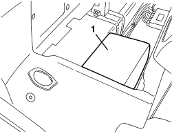
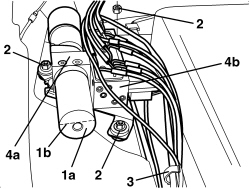
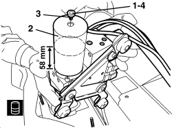

0010T81 HOOD HYDRAULIC SYSTEM FLUID - CHECK LEVEL AND TOP UP IF NECESSARY
- Path
- Procedures > 00 MAINTENANCE > 0010 NEW VEHICLES AND MAINTENANCE > 0010T VEHICLE FLUIDS > 0010T81 HOOD HYDRAULIC SYSTEM FLUID - CHECK LEVEL AND TOP UP IF NECESSARY
- Kind
- repair procedure (removal / refitting; the operation number is the code)
- Applies to
- engines: 2.2 JTS, 3.2 JTS; all production periods
- Interactive page
- https://sloeber94.github.io/elrnDB-aBrrSpdr/en/#/946003077
Applies to: engines: 2.2 JTS, 3.2 JTS; all production periods
Check and, if necessary, top up
Op. 0010T79 HOOD HYDRAULIC SYSTEM - DISCHARGE AND RESTORE PRESSURE
Op. 7040C11 HOOD HOUSING COMPARTMENT FLOOR TRIM - R.R.
1. Remove the sound insulation cover for the hydraulic control unit.

Applies to: engines: 2.2 JTS, 3.2 JTS; all production periods
1. Check the level of the oil in the hydraulic control unit reservoir (1a) which should be around the line (1b) in the reservoir corresponding to halfway.
If necessary, top up the fluid following the instructions below.
Discharge the hydraulic system pressure
Op. 0010T79 HOOD HYDRAULIC SYSTEM - DISCHARGE AND RESTORE PRESSURE
2. Undo the control unit retaining nuts.
3. Open the wiring and pipe retaining band.
4. Carefully raise the hydraulic control unit (4a) from the side (4b) placing it in an almost vertical position.

Applies to: engines: 2.2 JTS, 3.2 JTS; all production periods
1. Undo the fluid inlet plug with the help of a second operator.
2. Top up the fluid as necessary.
Component | Type | Description | Classification | Qty. | Validity |
|---|---|---|---|---|---|
Hydraulic hood system | Oil [l] | TUTELA GI/R | - |
3. Check the efficiency of the plug and the seal.
4. Tighten the cap.

Applies to: engines: 2.2 JTS, 3.2 JTS; all production periods
Refitting
- Place the hydraulic control unit in its housing.
- Position the wiring and the pipes and close the band.
- Tighten the control unit retaining nuts.
- Fit the sound insulation cover for the hydraulic control unit.
Op. 7040C11 HOOD HOUSING COMPARTMENT FLOOR TRIM - R.R.
- Restore the hydraulic system pressure.
Op. 7030H03 HOOD MANUAL OPENING FOLLOWING DEACTIVATION OF HYDRAULIC SYSTEM - CARRY OUT PROCEDURE
- Close the hood using the electric hood control.
Topics linked from this page (3)
- 0010T79 HOOD HYDRAULIC SYSTEM - DISCHARGE AND RESTORE PRESSURE
- 7030H03 HOOD MANUAL OPENING FOLLOWING DEACTIVATION OF HYDRAULIC SYSTEM - CARRY OUT PROCEDURE
- 7040C11 HOOD HOUSING COMPARTMENT FLOOR TRIM - R.R.
Topics that link to this page (16)
- X013 HOOD SYSTEM FLUID LEAK
- 0010K30 30,000KM SERVICE
- 0010K60 60,000KM SERVICE
- 0010K90 90,000KM SERVICE
- 0010M20 120,000KM SERVICE
- 0010M50 150,000KM SERVICE
- 0010M80 180,000KM SERVICE
- 7030H14 HOOD - R.R.
- 7030H58 AUTOMATIC HOOD HYDRAULIC ACTIVATING SYSTEM MOTOR/PUMP ASSEMBLY - R.R.
- 7030H76 PIPE FROM CONTROL UNIT TO HOOD HYDRAULIC ACTUATOR (HOOD EXTENSION MOVEMENT) - R.R.
- 7030H77 PIPE FROM CONTROL UNIT TO HOOD FIFTH ARC HYDRAULIC ACTUATOR (HOOD EXTENSION MOVEMENT) - R.R.
- 7030H78 PIPE FROM CONTROL UNIT TO HOOD HYDRAULIC ACTUATOR (HOOD CONTRACTION MOVEMENT) - R.R.
- 7030H79 PIPE FROM CONTROL UNIT TO HOOD FIFTH ARC HYDRAULIC ACTUATOR (HOOD CONTACTION MOVEMENT) - R.R.
- 7030H80 DUPLEX PIPE FROM CONTROL UNIT TO HOOD FRONT LOCK HYDRAULIC ACTUATOR (HOOD EXTENSION/CONTRACTION MOVEMENT)
- 7030H82 PIPE FROM CONTROL UNIT TO HOOD COMPARTMENT COVER HYDRAULIC ACTUATOR (HOOD EXTENSION MOVEMENT) - R.R.
- 7030H84 PIPE FROM CONTROL UNIT TO HOOD COMPARTMENT COVER HYDRAULIC ACTUATOR (HOOD CONTRACTION MOVEMENT) - R.R.